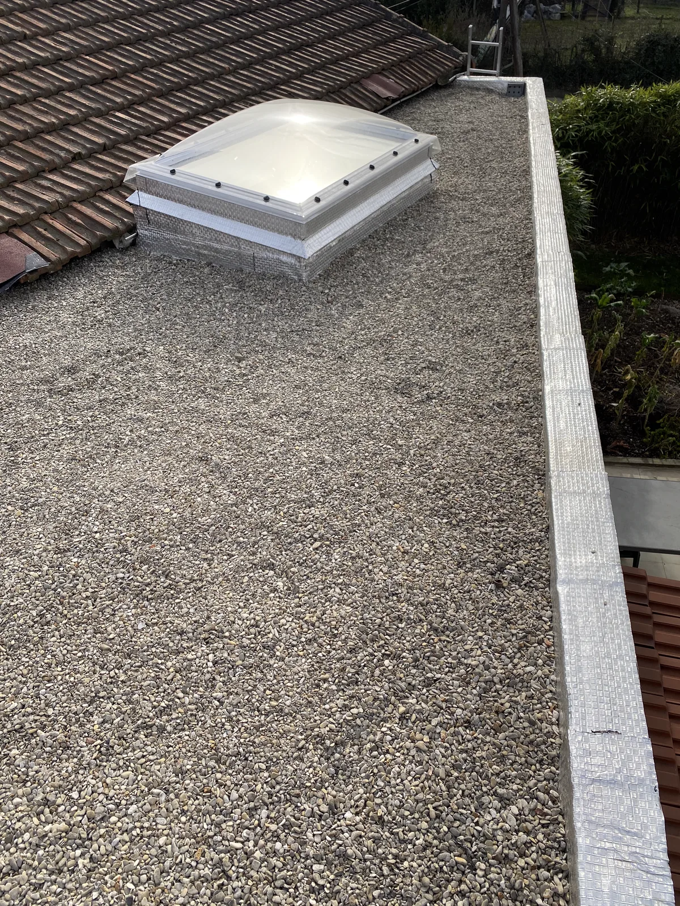
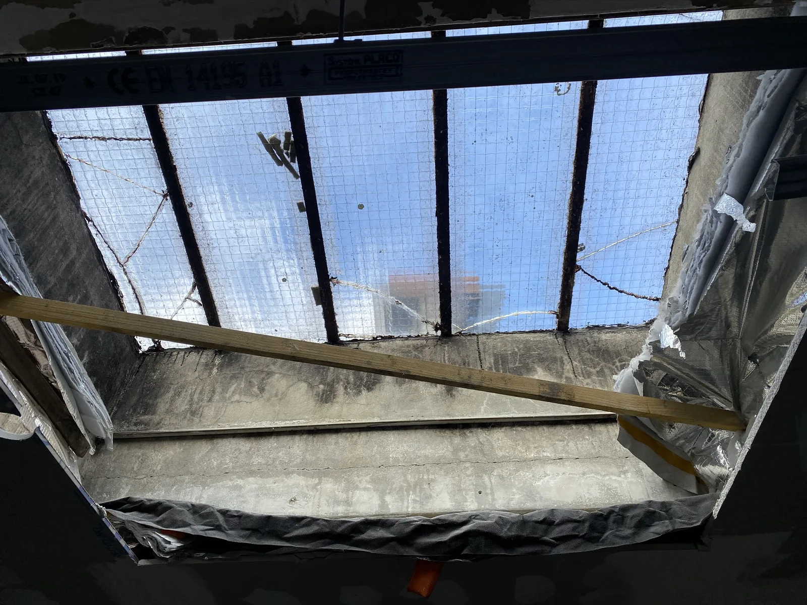
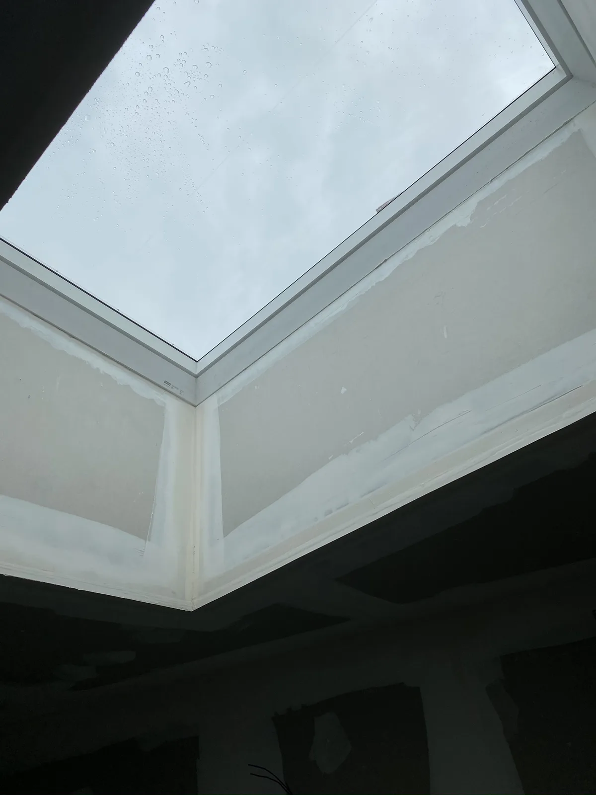
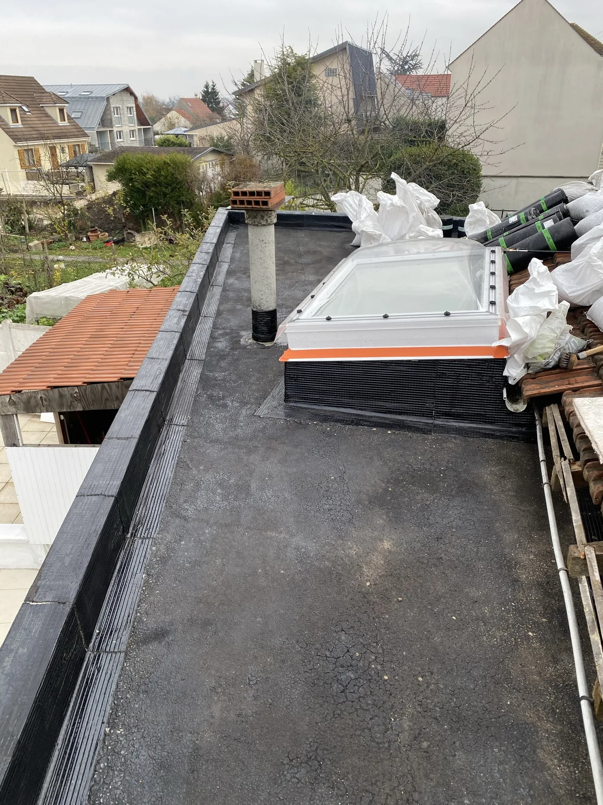
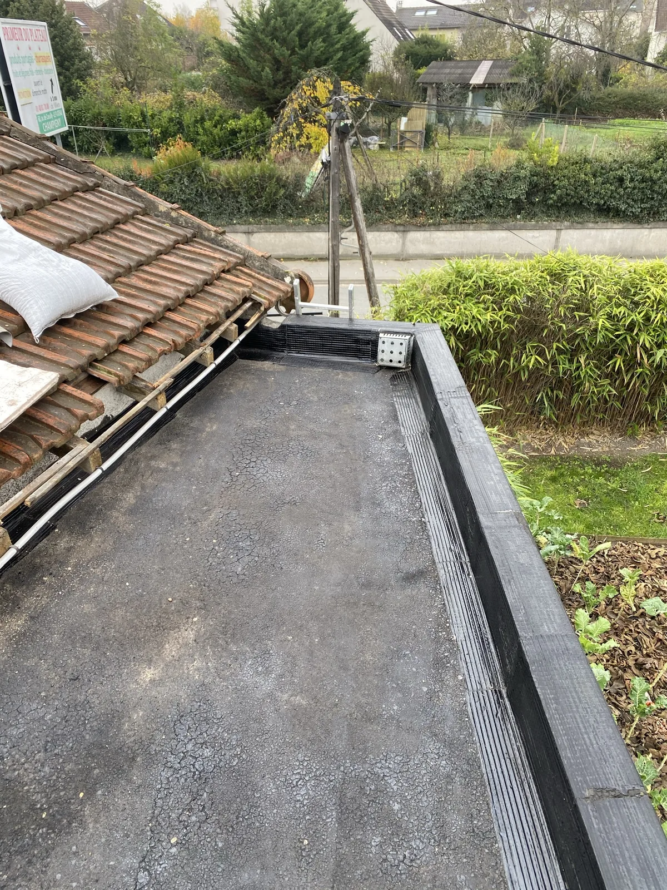
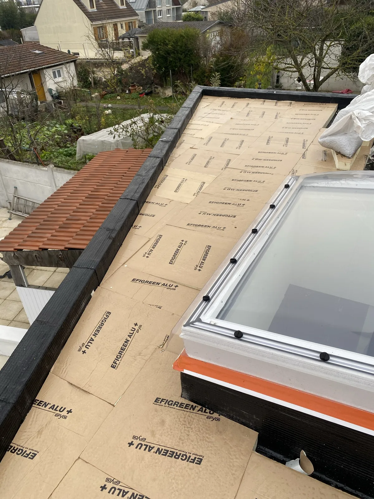
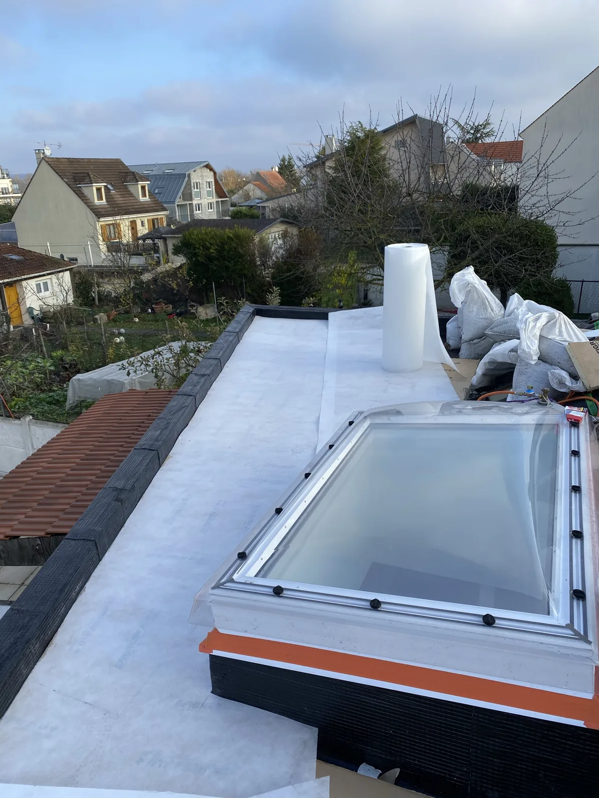
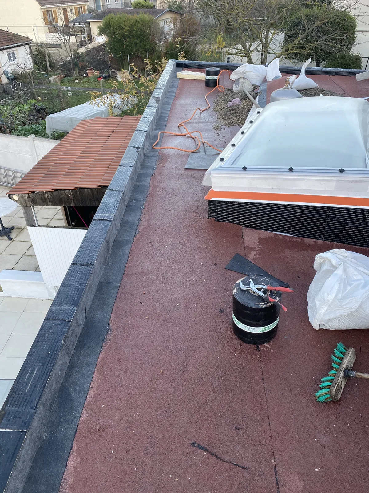
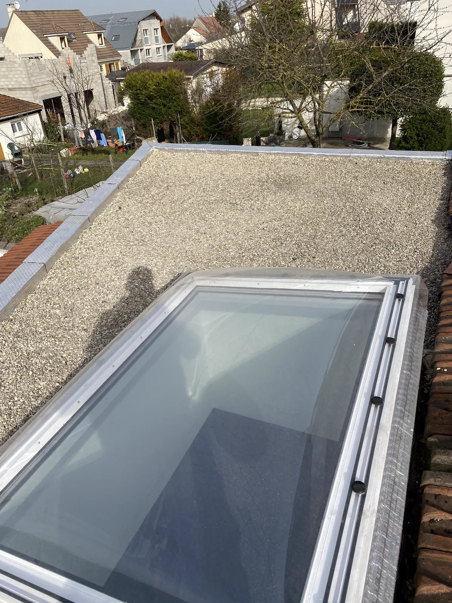
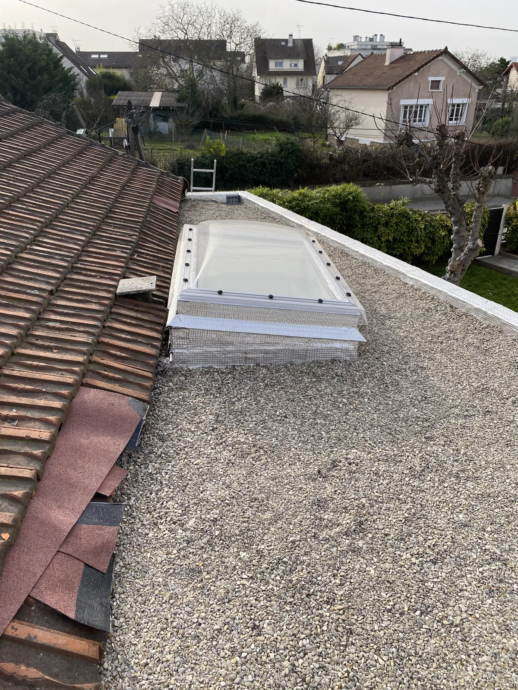

Le projet
À Noisy-le-Grand, juste à côté de notre chantier de terrasse en bois (chez la voisine), le toit-terrasse de la maison était vieillissant : un ancien vitrage fatigué, une étanchéité en fin de vie et une isolation insuffisante. L'objectif : rendre le toit étanche et performant, tout en faisant entrer davantage de lumière à l'intérieur.
À la place de l'ancien vitrage, DS.BAT a posé un hublot vitré (puits de lumière) sur sa costière en pente — quatre petits murets montés sur le toit-terrasse qui créent la pente nécessaire à l'évacuation de l'eau. Le toit a ensuite été repris de A à Z : mise à nu (retrait des graviers et de l'ancien aluminium), pose de panneaux d'isolation puis d'une membrane, étanchéité bitumineuse soudée au chalumeau avec relevés, et enfin finition en gravillons.
Ce que DS.BAT a réalisé
Réalisé par DS.BAT :
- Remplacement du hublot vitré (puits de lumière) sur sa costière en pente
- Mise à nu du toit : retrait des graviers et de l'ancien aluminium
- Isolation par panneaux, puis membrane par-dessus l'isolation
- Étanchéité bitumineuse soudée au chalumeau, avec relevés en périphérie
- Finition gravillonnée du toit-terrasse
Un chantier de couverture / étanchéité mené entièrement en interne, du diagnostic à la finition.
Avant / après — le hublot vu de l'intérieur


La réfection du toit-terrasse, étape par étape
1 · Mise à nu — retrait des graviers et de l'aluminium

2 · Isolation


3 · Membrane sur l'isolation

4 · Étanchéité bitumineuse soudée au chalumeau

Le résultat


À voir aussi
Juste à côté, dans la même rue de Noisy-le-Grand, DS.BAT a réalisé :
- Une terrasse en bois — pin traité sur plots, brise-vue, bancs et bacs à fleurs
Nos autres chantiers :
Découvrez tous nos métiers et nos zones d'intervention.